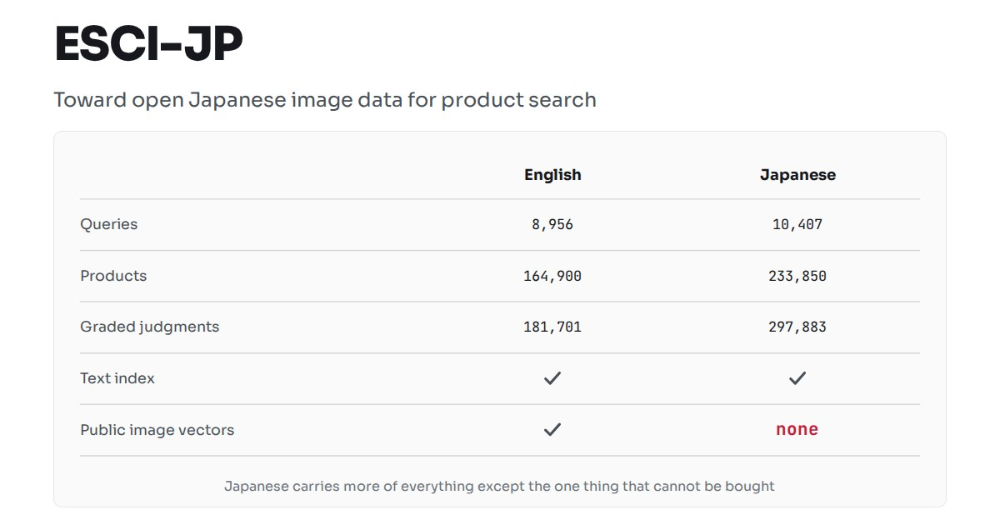
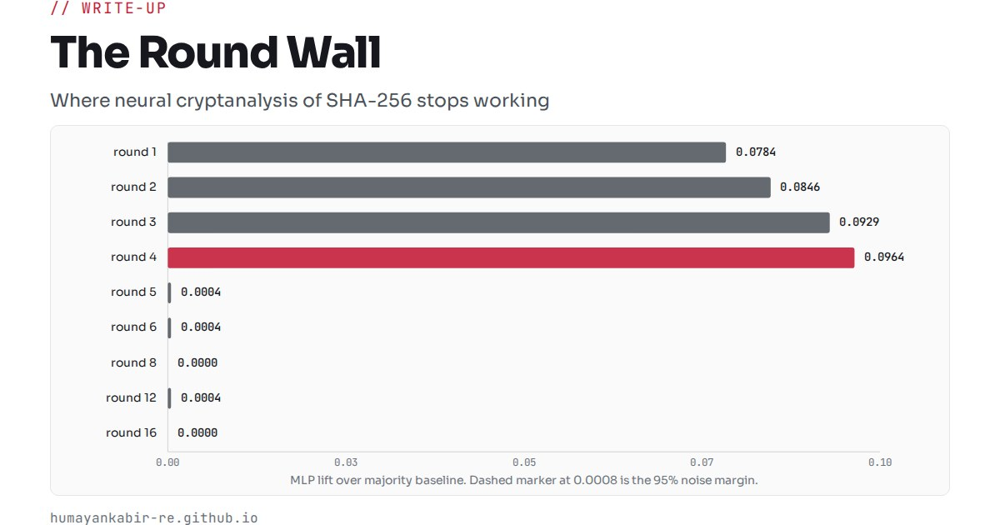
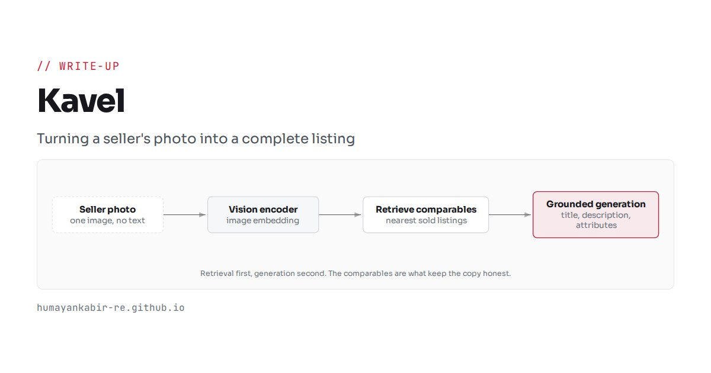
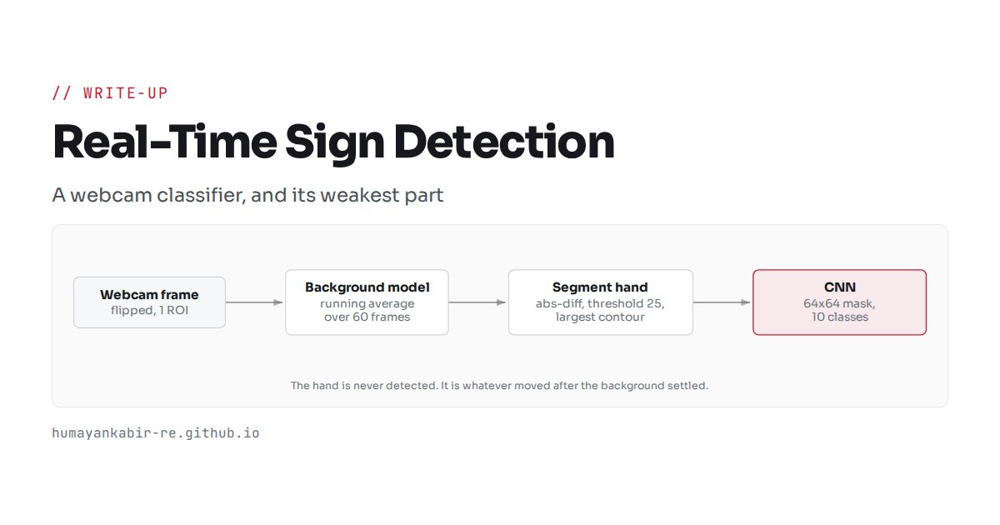
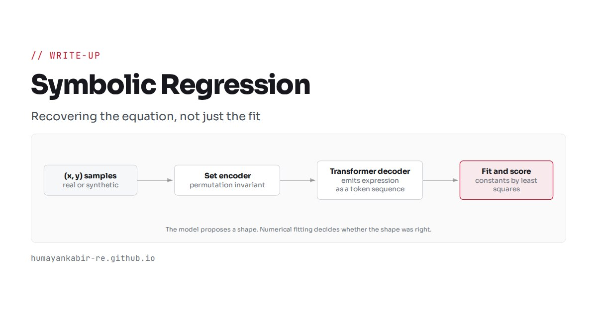

// Blog
Longer notes on the systems I build. Each one covers how the thing was put together, what the numbers were, and where it fell short.

Mercato
A multilingual product search engine, dataset to deployment.
BM25
bge-m3
CLIP
LambdaMART
FastAPI

The Round Wall
Where neural cryptanalysis of SHA-256 stops working, and how to prove it.
PyTorchCryptanalysis
Negative resultSignificance testing


Real-Time Sign Detection
A webcam sign classifier, and why its weakest part is not the model.
CNNOpenCVKerasComputer vision

Symbolic Regression
Recovering the equation that generated the data, not just a curve through it.
TransformersPyTorchSynthetic data